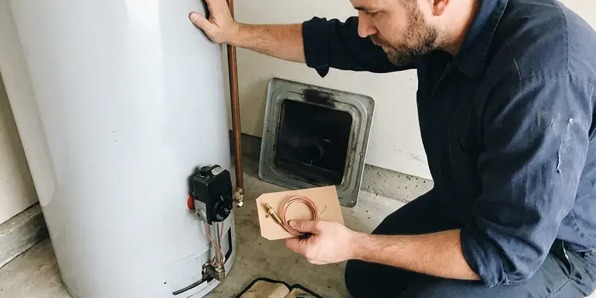
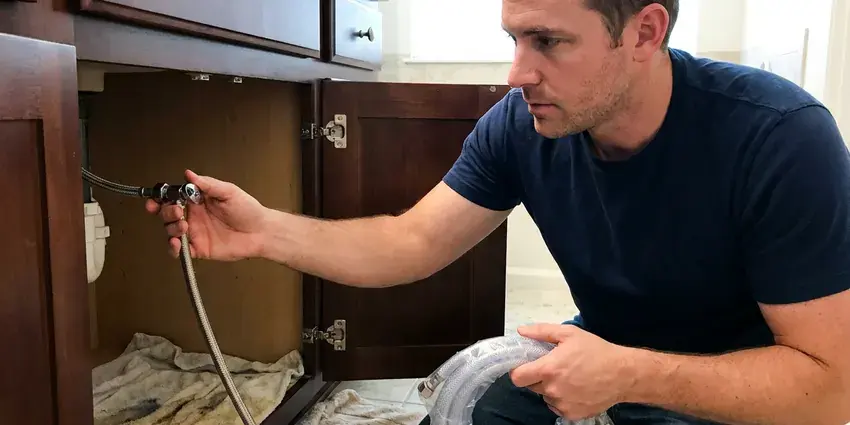
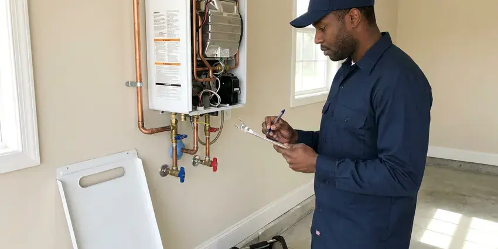
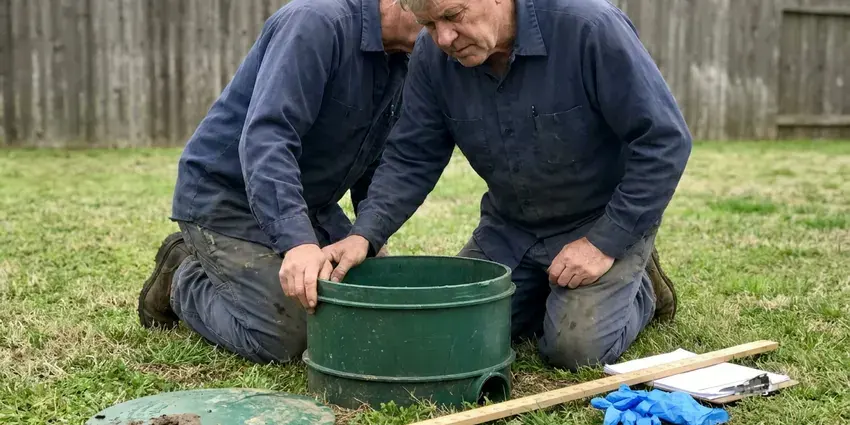
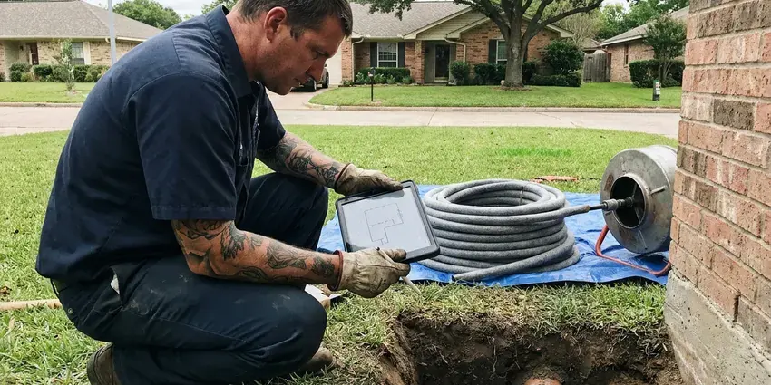

Underground Pipe Repair in Halawa, HI
Water mains, sewer laterals, pool lines and irrigation supply. HKL Plumbing handles every buried line in Halawa, HI.
- PEX or Type K Copper
- Pressure Tested Before Backfill
- Licensed Hawaii Plumbers
- Trenchless Replacement Options
Leak Under the Yard in Halawa, HI?
Spot repair, pull-through replacement or a new trench. You see every option in writing.
Service Lines, Laterals and Yard Lines in Halawa, HI
HKL Plumbing uses cameras, acoustic ground microphones and tracer gas to find underground problems in Halawa, HI. A wrong guess means a wasted hole. Sewer laterals get a camera and a sonde, while pressurized water lines get a listening survey, so either way the dig starts right on top of the failure. You get the price after that.
Our expertise includes:
- Small-pit repairs with pressure testing
- Sewer lateral and water main replacement
- Acoustic and tracer gas leak detection on buried lines

Additional Plumbing Repair Services in Halawa, HI
We offer expert plumbing repair services across Halawa, HI to fix leaks, restore flow, and keep your system running smoothly.


Water Heater Repair in Halawa



Local water leak repair by HKL Plumbing, Halawa

Tankless Water Heater Repair near Halawa

Local septic tank repair by HKL Plumbing, Halawa

Customers
Why Choose HKL Plumbing for Underground Pipe Repair in Halawa, HI?
Our quotes list the footage, the pipe material, the method and the price. No vague line items. If we open the ground and find a second leak a few feet past the first, you see it and approve it before we go further. The original price holds otherwise.
- Right Materials, PEX or Type K copper for water, PVC for drain and sewer lines.
- Full Equipment, Locators, cameras and digging gear come on every underground call.
- Warranty, Workmanship is warrantied in writing, on top of the pipe maker's warranty.
Citywide Coverage
Rental owners and HOAs across Halawa call us for repeat leaks on the same lines. Usually the pipe is old. We document each repair and track every failure by date and location so replacement decisions are easier to make.
Experienced Team
Every lead plumber on our underground crew is licensed and trained on shoring and trench safety. Hard ground is routine. They have dug through hardpan, caliche, clay and old fill, switching to a shovel whenever a marked line gets close.
Safety-First Approach
Trenches deeper than five feet get shoring or a trench box, as federal rules require. Soil caves without warning. Our crew sets the protection before anyone climbs in, keeping dirt away from the edge so the trench holds.
Trusted Certified Halawa Plumbing Services Professionals
At HKL Plumbing, we take pride in licensed, certified plumbing services throughout Halawa, HI. Those papers on the wall mean something. Our plumbers hold recognized industry credentials, and they follow strict safety and quality rules on every repair, installation and maintenance call we run.
Call Us Now PHCC Plumbing Contractor Recognition
PHCC Plumbing Contractor Recognition Better Business Bureau (BBB) Accreditation
Better Business Bureau (BBB) Accreditation Angi Certified Pro
Angi Certified Pro ISO 9001 Quality Management Certification
ISO 9001 Quality Management CertificationUnderground Pipe Repair Jobs We Handle in Halawa, HI
Underground Storm Drain Repair in Halawa, HI
Buried storm drains clog with silt, leaves and roots. Windward areas get far more rain than leeward areas, so drainage, gutters, and sump planning vary a lot from one side of an island to another. Then the yard floods. We clear blockages with a jetter, find cracks and disconnected joints on camera, and replace damaged sections so runoff gets carried away from the house instead of soaking the foundation. We look at gutter connections too.

Emergency Underground Pipe Repair in Halawa
A burst service line can flood a yard and wash out the soil under a driveway. Turn off water at the meter. We talk you through the shutoff on the phone and send a crew to locate and expose the break, getting your water back on as soon as the repair is made and tested. Same-day repairs are typical.
Galvanized and Polybutylene Line Replacement in Halawa
Galvanized steel rusts from the inside until little water gets through. Polybutylene cracks without warning. If your buried service is either one, patches are usually temporary, so we replace the line with PEX or Type K copper, often pulling the new pipe through the old path to limit digging. Pressure comes back right away.
Trenchless Pipe Repair in Halawa
Trenchless repair replaces or relines buried pipe without opening its full length. Two small pits, usually. We can pull new PEX or HDPE through the old pipe path or line a sewer lateral with resin, so concrete and established plantings stay put. Some lines need a dig. The route and condition decide it.
Underground Pipe Repair Cost Comparison in Halawa, HI
A single point repair on a shallow water line is the cheapest option. Pull-through costs more. It avoids open trenching and the long-term risk of more leaks on old pipe, while a full trench replacement is sometimes needed when the old route is blocked or the pipe is too far gone. You get each option in writing.
Foundation Leak Detection and Repair in Halawa, HI
A leak under a slab often shows up as a warm spot on the floor. Or a hissing sound. We isolate hot and cold lines with pressure tests and locate the leak with acoustic gear and thermal imaging, choosing between a targeted floor cut and a reroute through the walls or attic. Both options get a price.
Pool and Outbuilding Supply Line Repair in Halawa, HI
Pool auto-fills, guest houses, outdoor kitchens and detached garages often have their own buried water lines. They are hard to trace. We use tracer wire, electronic locators and acoustic gear to find leaks along the full length, and repairs are made with direct-bury rated pipe and fittings, then pressure tested before we close up. Some lines get rerouted instead.

Pipe Bursting Services in Halawa, HI
Pipe bursting pulls a new pipe through the old one while breaking the old pipe outward. The new line takes its place. A bursting head on a cable splits clay, cast iron or brittle plastic, while a continuous HDPE pipe is pulled in behind at the same diameter or bigger. Collapsed sections are fine. Lining cannot do that.
Local Underground Pipe Repair in Halawa, HI
You want a crew that finds the leak and fixes it without a week of back and forth. We built our service around that. One crew locates it, digs it and repairs it, so nobody has to schedule three companies on three different days.
Searching for underground pipe repair near me in Halawa, HI usually means the water bill already jumped. Every hour adds to it. Our crews arrive with locating gear and repair materials on the truck, so most leaks get found, explained and quoted on the first visit.
HKL Plumbing at a Glance
- Fully licensed plumbing team covering Halawa, HI
- Same-day appointments and 24/7 emergency response
- Upfront, flat-rate pricing before work begins
- 4.8-star rated by 529+ Hawaii customers
Halawa Map
Halawa Information
- Population
- 15,016
- Area codes
- Local
- Service area
- Halawa and communities within 40 miles
- Nearby
- Aiea, Waimalu, Pearl City, Waipio
Service lines in Halawa, HI carry full street pressure through ground that moves, so a small leak rarely stays small. Salt air and year-round humidity are the biggest stress on plumbing in Hawaii, corroding exposed copper, fittings, and outdoor fixtures faster than inland climates.
Talk to a Plumber
Call HKL Plumbing for reliable plumbing work done by licensed pros in Halawa, HI.
Our Specialized Plumbing Services in Halawa, HI
At HKL Plumbing, you get every kind of plumbing service from one company across Halawa, HI. We go from leak detection all the way to full system installations, for homes and commercial buildings, and we do it quickly at a fair price. Explore our core services below:


From Locating to Backfill in Halawa, HI
No digging until you have approved the quote.
Call and Describe the Problem
Phone HKL Plumbing at (808) 649-6718 and tell us what you are seeing. We will book a locating visit.
Locate and Quote
We locate the leak with acoustic and electronic gear, mark it on the ground and write up the price.
Dig and Repair
Once you approve, we call 811, excavate a small pit and fix the line.
Frequently Asked Questions About Underground Pipe Repair in Halawa
A minor spot repair can start around $500. Replacement is a bigger number. Trenchless full line replacements often run $3,000 to $10,000 or more, with pipe material, depth, length, the repair method and how much of the yard needs restoring setting most of the price. You get a written quote first.
Water lines get PEX or Type K copper. Each is approved for direct bury. Sewer lines get Schedule 40 PVC, and the final choice depends on the existing pipe, the soil and what your local code allows. Couplings get sized to both pipes.
Many utilities offer a one-time leak adjustment. It is worth asking. Most want proof that the leak was repaired promptly, and we give you an invoice and repair documentation that shows the date, location and fix. Policies vary by utility.
Usually, for larger jobs. Small repairs may not. Replacing a main water service or a sewer lateral in Halawa typically requires a plumbing permit, which lets an inspector see the pipe before it gets buried. We pull it for you.
Yes, especially old clay and cast iron sewer pipe. Roots seek moisture. Roots enter through hairline cracks and loose joints, then thicken every season until the pipe clogs or cracks. Mature trees mean more risk. Cutting helps short term.
Main water service and sewer replacements usually do. Spot repairs vary. The Halawa building department typically wants a permit for any major buried line replacement, which allows an inspection before backfill. We handle the filing.
For water lines we use PEX or Type K copper. Each is approved for direct bury. Sewer and drain work uses Schedule 40 PVC, and trenchless jobs use fused HDPE, and every one of these holds up to soil and water far better than galvanized or clay. We follow your city's code.
Look for wet ground that never dries. Pressure drops matter too. Unexplained bill increases, foul odors near the cleanout or gurgling drains point to trouble in the pipe you cannot see. We can check it fast.
What Our Customers Say About Our Plumbing Experts

Paul B.
Our pit pump ran nonstop even in dry weather. The plumber found the check valve was stuck open, so the same water kept cycling back into the pit. New valve, new float switch, done in an hour. It runs quiet now.
Sump Pump · Halawa, HI
Marcus H.
Grease from the fryer line kept clogging the kitchen drain at my diner. HKL Plumbing hydro jetted the line after closing, showed me the buildup on camera, and set us up on a quarterly cleaning so it does not catch us on a Friday again.
Drain Cleaning · Aiea, HI
Angela D.
Our sump pump quit during a storm and the water was an inch from the basement carpet. HKL Plumbing put in a new pump with a battery backup that same evening. We have had two heavy rains since. It kicked on both times.
Sump Pump · Waipio, HIRobert G.
The camera showed a full break in our clay sewer line near the street. HKL Plumbing replaced it with a trenchless pipe burst, so the only digging was two small pits in the yard. They let us watch the footage before and after.
Sewer Line Replacement · Halawa, HI
Laura S.
Our 40 gallon tank started leaking from the bottom after thirteen years. The tech hauled the old one out, set a new unit with a fresh expansion tank, and had hot water running in about four hours. He took the old tank with him too.
Water Heater Replacement · Waimalu, HIDiane F.
My kitchen faucet had dripped for months and I finally got tired of hearing it at night. HKL Plumbing came out the next morning, replaced the cartridge and the O rings, and tightened a loose base that was letting water under the sink.
Faucet Repair · Urban Honolulu, HI